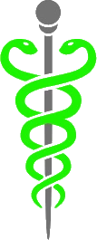

<!DOCTYPE html>
<html>
<head>
  <meta charset="UTF-8" />
  <meta name="viewport" content="width=device-width, initial-scale=1">
  <title>Earth C - The Classpect Connector</title>
  <link rel="icon" type="image/png" href="../images/special/CCLogoEpilogues.png" />

  <!-- React 18 -->
  <script crossorigin src="https://unpkg.com/react@18/umd/react.development.js"></script>
  <script crossorigin src="https://unpkg.com/react-dom@18/umd/react-dom.development.js"></script>

  <!-- Babel -->
  <script src="https://unpkg.com/@babel/standalone/babel.min.js"></script>

  <!-- Tailwind -->
  <script src="https://cdn.tailwindcss.com"></script>
  <link rel="stylesheet" href="../components/mobile.css">

  <!-- Shared Components -->
  <script type="text/babel" src="../components/constants.js"></script>
  <script type="text/babel" src="../components/header.js"></script>
  <script type="text/babel" src="../components/searchbar.js"></script>

  <style>
    @font-face {
      font-family: 'Typostuck';
      src: url('../fonts/TYPOSTUCK.ttf') format('truetype');
    }
    
    * {
      margin: 0;
      padding: 0;
      box-sizing: border-box;
    }
    
    body, html {
      width: 100%;
      min-height: 100vh;
      overflow-x: hidden;
      font-family: 'Courier New', monospace;
    }
    
    /* Font classes for components */
    .font-typostuck {
      font-family: 'Typostuck', 'Courier New', monospace;
      font-size: 1.25rem;
      font-weight: normal;
    }
    
    .font-typostuck-title {
      font-family: 'Typostuck', 'Courier New', monospace;
      font-size: 2.5rem;
      font-weight: normal;
    }
    
    .font-typostuck-header {
      font-family: 'Typostuck', 'Courier New', monospace;
      font-size: 1.75rem;
      font-weight: normal;
    }
    
    .font-courier {
      font-family: 'Courier New', monospace;
    }
    
    .page-container {
      min-height: 100vh;
      display: flex;
      flex-direction: column;
      background-color: #000;
    }
    
    .cherub-container {
      flex: 1;
      position: relative;
      display: flex;
      align-items: center;
      justify-content: center;
      overflow: hidden;
      min-height: calc(100vh - 200px);
    }
    
    /* Background layer - keep natural size, center on planet/green sun */
    .background-layer {
      position: absolute;
      top: 50%;
      max-width: none;
      max-height: 80vh;
      height: auto;
      width: auto;
      transition: opacity 0.5s ease-in-out;
      /* No transition for left/transform - snap into position instantly */
    }
    
    /* Default - inert Earth C centered */
    .background-layer-inert {
      left: 50%;
      transform: translate(-50%, -50%);
    }
    
    /* Caliborn - Colors and Mayhem centered */
    .background-layer-caliborn {
      left: 50%;
      transform: translate(-50%, -50%);
    }
    
    /* Calliope - Green Sun shifted RIGHT so sun center is at page center */
    .background-layer-calliope {
      left: 52%;
      transform: translate(-50%, -50%);
    }
    
    .symbols-container {
      position: relative;
      z-index: 10;
      display: flex;
      gap: 500px;
      align-items: center;
      justify-content: center;
      padding: 40px;
    }
    
    .symbol-wrapper {
      position: relative;
      cursor: pointer;
      transition: transform 0.3s ease;
    }
    
    .symbol-wrapper:hover {
      transform: scale(1.05);
    }
    
    .symbol-image {
      height: 100px;
      width: auto;
      display: block;
      filter: drop-shadow(0 0 15px rgba(0, 0, 0, 0.9));
    }
    
    .title-text {
      position: absolute;
      top: 50%;
      left: 50%;
      transform: translate(-50%, -50%);
      font-size: 2.5rem;
      font-weight: bold;
      text-align: center;
      white-space: nowrap;
      opacity: 0;
      transition: opacity 0.3s ease;
      pointer-events: none;
      text-shadow: 0 0 20px rgba(0, 0, 0, 1),
                   0 0 40px rgba(0, 0, 0, 0.8),
                   0 0 60px rgba(0, 0, 0, 0.6);
      font-family: 'Courier New', monospace;
    }
    
    .symbol-wrapper:hover .title-text {
      opacity: 1;
    }
    
    /* Tablet */
    @media (max-width: 1200px) {
      .symbols-container {
        gap: 400px;
      }
      
      .background-layer {
        max-height: 70vh;
      }
    }
    
    @media (max-width: 1024px) {
      .symbols-container {
        gap: 350px;
      }
    }
    
    /* Mobile - vertical layout */
    @media (max-width: 768px) {
      .symbols-container {
        flex-direction: column;
        gap: 150px;
      }
      
      .symbol-image {
        height: 90px;
      }
      
      .title-text {
        font-size: 2rem;
      }
      
      .background-layer {
        max-height: 60vh;
      }
    }
    
    @media (max-width: 480px) {
      .symbols-container {
        gap: 120px;
      }

      .symbol-image {
        height: 70px;
      }

      .title-text {
        font-size: 1.5rem;
      }
    }

    /* ── MOBILE / DESKTOP SECTION TOGGLE ──────────────── */
    .desktop-cherub { display: block; }
    .mobile-cherub  { display: none;  }

    @media (max-width: 639px) {
      .desktop-cherub { display: none; }
      .mobile-cherub {
        display: flex;
        flex-direction: column;
        align-items: center;
        gap: 28px;
        padding: 28px 16px 52px;
        background: #000;
      }

      /* Symbol button: relative container so label can overlay */
      .mobile-sign-btn {
        position: relative;
        display: inline-block;
        cursor: pointer;
      }
      .mobile-sign-btn img {
        height: 88px;
        width: auto;
        display: block;
        filter: drop-shadow(0 0 14px rgba(0,0,0,0.95));
      }
      /* Text centered over the symbol image */
      .mobile-sign-label {
        position: absolute;
        inset: 0;
        display: flex;
        align-items: center;
        justify-content: center;
        font-family: 'Courier New', monospace;
        font-weight: bold;
        font-size: 1.05rem;
        text-align: center;
        white-space: nowrap;
        pointer-events: none;
        text-shadow:
          0 0 10px rgba(0,0,0,1),
          0 0 22px rgba(0,0,0,1),
          0 0 44px rgba(0,0,0,0.85);
      }

      .mobile-locam-img {
        width: 88%;
        max-width: 300px;
        height: auto;
        display: block;
      }
    }
  </style>
</head>

<body>
<div id="root"></div>

<script type="text/babel">
const { useState } = React;

/* Custom dark theme for header/searchbar */
const darkTheme = { 
  bg: "#000000",
  contentBg: "#1a1a1a",
  textColor: "#ffffff",
  accentBg: "#333333",
  isDark: true,
  logoPath: "../images/special/CCLogoEpilogues.png"
};

const EarthCPage = () => {
  const [hoveredSide, setHoveredSide] = useState(null);
  
  const handleNavigate = (path) => {
    window.location.href = `../index.html#${path}`;
  };
  
  // Determine which background to show
  const getBackgroundImage = () => {
    if (hoveredSide === 'caliborn') {
      return '../images/tags/06002_ColorsandMayhem_unlocked.gif';
    } else if (hoveredSide === 'calliope') {
      return '../images/tags/Act7_Calliope_BlackHole.webp';
    } else {
      return '../images/tags/06001_ColorsandMayhem_inert.gif';
    }
  };
  
  const handleCalibornClick = () => {
    window.location.href = '../index.html#/classpect/lord-of-time';
  };
  
  const handleCalliopeClick = () => {
    window.location.href = '../index.html#/classpect/muse-of-space';
  };
  
  return (
    <div className="page-container">
      <Header onNavigate={handleNavigate} theme={darkTheme} />
      
      {/* Constrained searchbar wrapper */}
      <div className="px-3 sm:px-6">
        <div className="max-w-4xl mx-auto">
          <SearchBar onNavigate={handleNavigate} theme={darkTheme} />
        </div>
      </div>
      
      {/* ── DESKTOP layout (hover-interactive) ─────────── */}
      <div className="desktop-cherub">
        <div className="cherub-container">
          {/* Background - natural sizing, centered on planet/green sun */}
          

          {/* Symbols */}
          <div className="symbols-container">
            {/* Caliborn - Left */}
            <div
              className="symbol-wrapper"
              onMouseEnter={() => setHoveredSide('caliborn')}
              onMouseLeave={() => setHoveredSide(null)}
              onClick={handleCalibornClick}
            >
              
              <div className="title-text" style={{ color: '#ff0000' }}>LORD OF TIME</div>
            </div>

            {/* Calliope - Right */}
            <div
              className="symbol-wrapper"
              onMouseEnter={() => setHoveredSide('calliope')}
              onMouseLeave={() => setHoveredSide(null)}
              onClick={handleCalliopeClick}
            >
              
              <div className="title-text" style={{ color: '#2ed73a' }}>mUse of space</div>
            </div>
          </div>
        </div>
      </div>

      {/* ── MOBILE layout (stacked, always-visible labels) ── */}
      <div className="mobile-cherub">
        {/* Caliborn — symbol with text overlaid */}
        <div className="mobile-sign-btn" onClick={handleCalibornClick}>
          
          <div className="mobile-sign-label" style={{ color: '#ff0000' }}>LORD OF TIME</div>
        </div>

        {/* Inert Land of Colors and Mayhem — centre piece */}
        

        {/* Calliope — symbol with text overlaid */}
        <div className="mobile-sign-btn" onClick={handleCalliopeClick}>
          
          <div className="mobile-sign-label" style={{ color: '#2ed73a' }}>mUse of space</div>
        </div>
      </div>
    </div>
  );
};

const root = ReactDOM.createRoot(document.getElementById("root"));
root.render(<EarthCPage />);
</script>
</body>
</html>